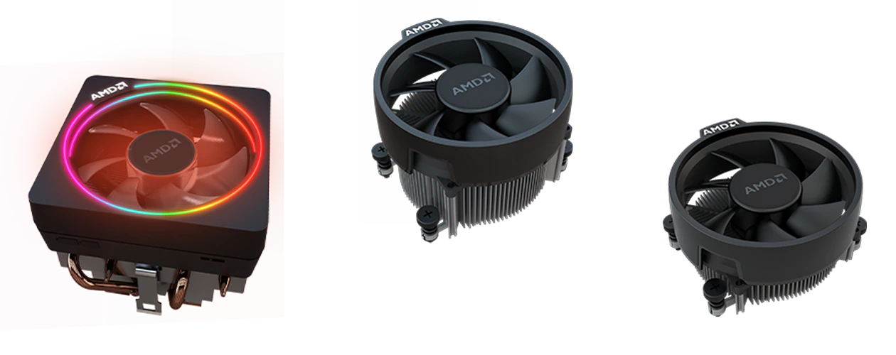
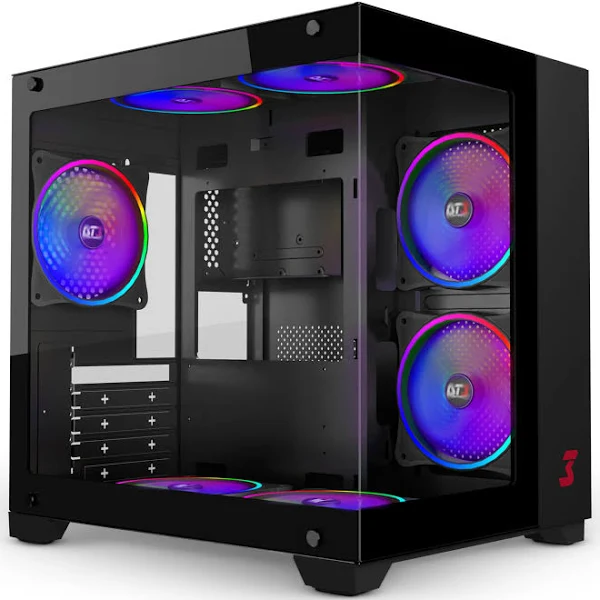

Cooler / Water Cooler
O que é cooler e qual a sua função no computador. Além de permitir que o PC trabalhe melhor, sem erros ou queda de rendimentos, o cooler protege as peças componentes evitando que “fritem” em um ambiente de temperatura elevada. As peças do computador produzem muito calor, principalmente as de alto desempenho. Veja abaixo alguns modelos de cooler.
Air Cooler

O Air Cooler é o tipo mais comum de sistema de resfriamento para computadores. Consiste em um dissipador de calor com aletas de metal e um ou mais ventiladores que retiram o calor do processador e o dissipam para o ar circundante.
Water Cooler

Um water cooler é um sistema de refrigeração líquida projetado para resfriar a CPU do seu computador. Ele consiste em um radiador, uma bomba, tubos e uma placa base. A água ou líquido refrigerante circula pelo sistema, transferindo o calor da CPU para o radiador, onde é dissipado por meio das ventoinhas.
Gabinete

A função do Gabinete é proteger os componentes de sujeira e umidade, e também evitar superaquecimento dos componentes. Dentro de um gabinete, existem vários componentes que fazem com que o computador funcione.